House Entrance


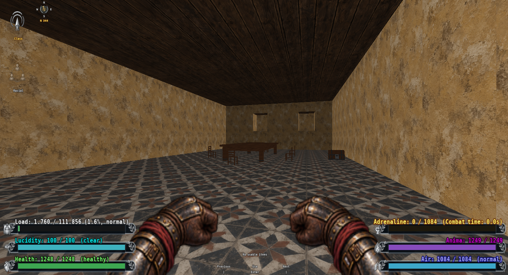
Compare the existing roof-tile underside with the owned timber ceiling proposal. Both sides use the same combined #881 art. Only321 surface names across160 private houses and the municipal underside differ. Exterior roofing, room geometry and existing furniture stay intact.
This proposal awaits the final author session. It does not establish historical authenticity or approval of timber for every room. The municipal office/archive finish and the broader batch remain open.
Four native view phases passed sampled clearance and short walks. House entry and return used the real portal/capture/render acknowledgement. Camera teleports, invulnerability and menu dismissal support these captures; they do not establish ordinary campaign progression or all-map traversal.
All options require fresh disposable sessions: texture-name changes alter map checksums even when geometry is identical. Same-option save/reload and a fresh original-material session passed. Do not import campaign saves into these review options.
Source and proposal · Surface audit · Save/reload · Presentation and tic tails · Image review record

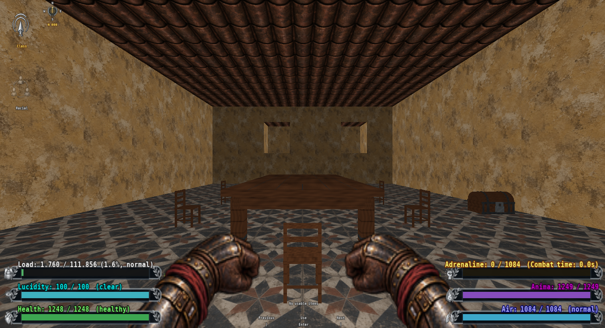
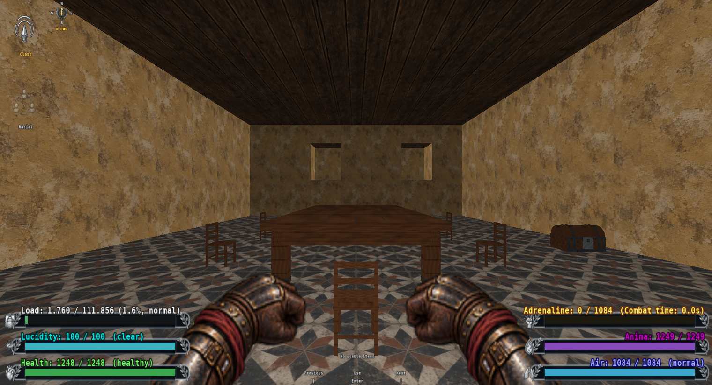
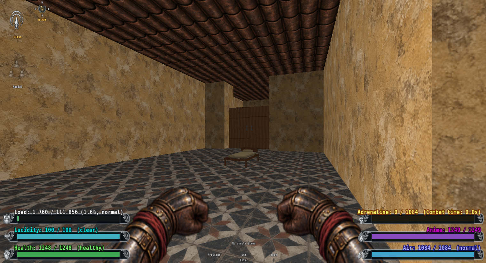
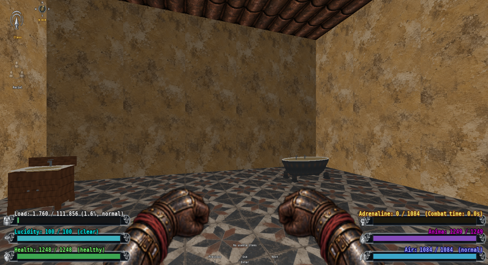
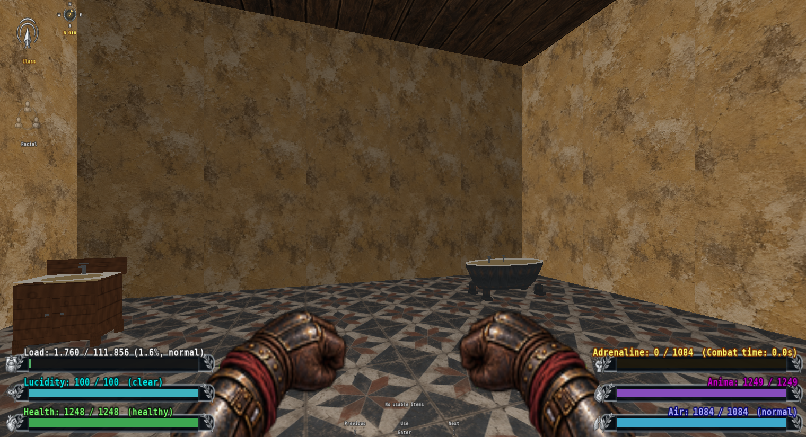
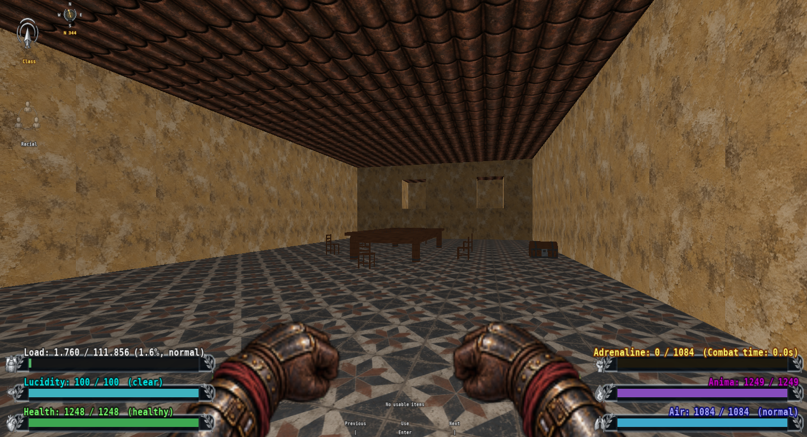

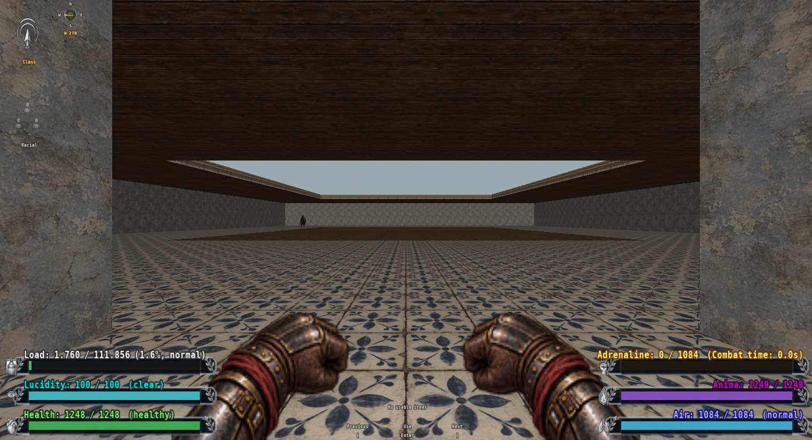
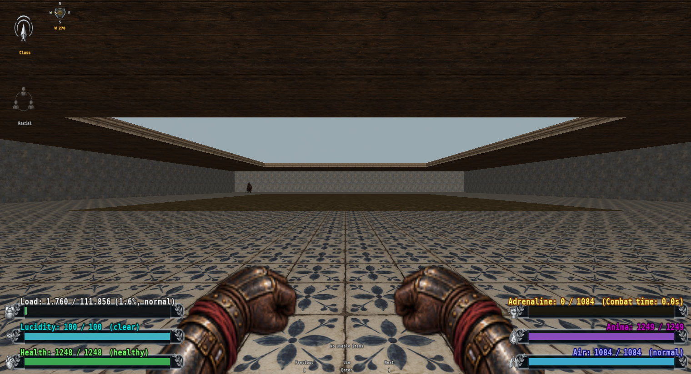
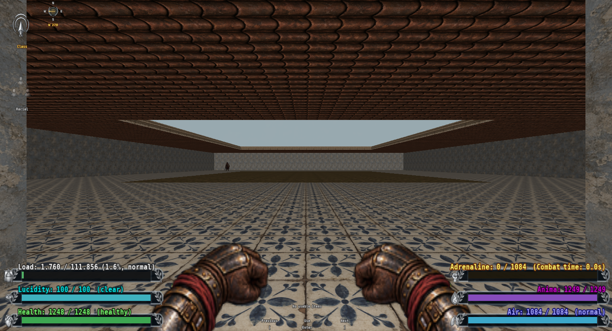
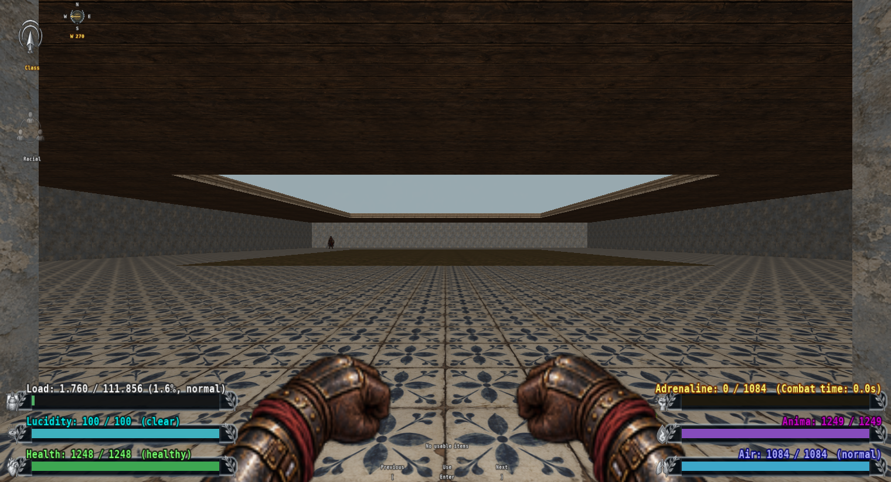